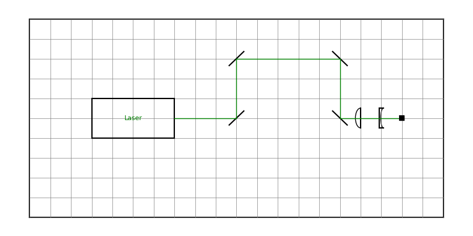

A Simple Example¶
Here we will make a drawing of a simple optical layout involving one laser beam, to illustrate how the package works. The python file simple_example.py in the examples folder contains the code shown here.
First we have to load the package:
import pyopticaltable as pyopt
You can either put the file pyopticaltable.py in your working directory, or add it to your path so python can find it wherever you are.
Now we need to set up our table:
table = pyopt.OpticalTable(20, 10, size_factor=10, show_edge=True, show_grid=True)
This creates an OpticalTable object called table. The dimensions of the table in terms of matplotlib axis coordinates are 20 by 10 (width by height). The point (0,0) is at the center of the table, so the point (-10, -5) is the lower left corner. The dimensions of the table in millimetres are given by the dimensions in axis coordinates multiplied by the size_factor - which is equal to 10 here. Thus, our final figure will be 200mm by 100mm. This allows you to make the axis coordinates a nice round number to make placing optics easy, but also allows you to tweak the figure size so it will fit in a precisely defined column width without making the optic placement annoying.
The two other keyword arguments affect how the table is displayed. show_edge draws a line around the table edge, so you can see where the limits of your table are. show_grid draws a faint grid over the table where the lines are spaced 1 matplotlib axis unit apart - so here there will be a 20x10 grid covering the table (note that you can also change the grid spacing, but the dimension divided by the spacing needs to be an integer). This grid is mostly useful for editing, as you can make the figure (running the script with just these two lines will make an empty table), and then mouse over the grid to see exactly what the coordinates of each point are. This makes it easier to get things to line up and be square - and you can then turn off the grid when you want to save the figure. See the docstrings for more information.
Now we can also initialise the beam we are going to use:
beam = pyopt.LaserBeam(colour='green')
beampath = []
The first line here creates a LaserBeam object that will eventually be green (any matplotlib-allowed colour works fine) - see the docstrings for other arguments you can use. In the second line we create an empty list called beampath, which we will use when we come to actually route our beam through the optics. Let’s now place a laser that our beam can come from:
laser = table.box_source(-5,0, 4, 2, 0, colour='k', output_side='right',label='Laser', textcolour='green', labelpad=0)
This will just put a box labelled Laser on the table, and the center of the box will be at (-5,0), and it is 4 grid spaces wide and 2 high (again see doctrings for detailed info). This box is an OpticalElement object that is called laser. The output_side kwarg determines where the beam will come from - it will originate from the right hand side of the box we placed. Having placed the laser, we can now append this object to the list beampath:
beampath.append(laser)
The beam will originate from the first object in the list beampath and then hit subsequent optical elements in the order they are in the list. So it’s easy to keep track of if you just append each object to the list after you make it. Alternatively, you can make all the objects and then add them to the list at once at the end - either works. Let’s add some mirrors for our beam to reflect off.:
mirrorsize = 0.5
mirror1 = table.mirror(0,0,mirrorsize,45)
beampath.append(mirror1)
mirror2 = table.mirror(0,3,mirrorsize,45)
beampath.append(mirror2)
mirror3 = table.mirror(5,3,mirrorsize,-45)
beampath.append(mirror3)
mirror4 = table.mirror(5,0,mirrorsize,-45)
beampath.append(mirror4)
This will add four OpticalElement mirror objects to the table. Note that all of the optical elements we can add are methods of the OpticalTable class (i.e. the syntax is table.element()). The (x,y) position of the center of each mirror is defined, and the size of the mirror (length of the line representing it) is set globally in the mirrorsize variable. By default, any mirror you add lies flat along the x-axis, and so the final argument is the angle to rotate the mirror from the positive x-axis - 45 degrees (or -45 degrees) is common, but any is possible (note that you can rotate all other optical elements too).
After we add each mirror, we add the name each one to the beampath list, so that our beam takes the right route through them (note also that the beam will hit the mirror at the central point (x,y)). Let’s try drawing the beam now:
beam.draw(table, beampath)
Now we have a green beam drawn on the OpticalTable table which follows the path defined by beampath. The nice thing is that the beam path is defined by the positions of the mirrors - try and move one of the mirrors and watch the beam re-route itself. You could also add the mirrors in a different order to beampath if you wanted it to take a different route.
Now we can add some more optics though, so let’s add these lines before we draw the beam:
L1 = table.convex_lens(6, 0, mirrorsize, 90)
beampath.append(L1)
L2 = table.concave_lens(7, 0, mirrorsize, 270)
beampath.append(L2)
dump = table.beam_dump(8, 0, 0.1, 0, fillcolour='k')
beampath.append(dump)
Adding two lenses like a telescope, and then putting a beam dump in to catch the beam at the end. There you have it! You can now turn off the grid and save the figure, or add more things, or do whatever you’d like to. You can see a more complex example in the examples folder too - one with multiple beams and things that aren’t all at right angles.
